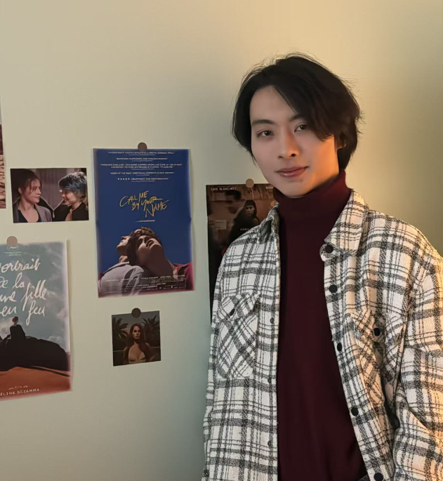

Qiyan Luo
Email: qiyanluo8@gmail.com
Personal Information
Date of Birth: August 2 , 2004
Nationality: China
Languages: English, Chinese
Education Experience
- BSc in Quantum Information Technology Talent Program, Atomic and Molecular Physics - University of Science and Technology of China (2022 - 2026)
- Selected Courses:
- Mathematical Analysis, Linear Algebra, Probability Theory
- Complex Variables, Mathematical Physics, Computational Methods
- Mechanics, Electromagnetism, Thermodynamics, Optics
- Atomic Physics, Electronics, Electrodynamics, Quantum Information
- Computational Physics, Quantum Mechanics, Solid State Physics
- Machine Learning, Data Structures, Algorithms, Financial Engineering
Research Experience
-
Fluorescence Coupling with Multi-mode and Single-Mode Fiber Array in Ion Trap System
This project aims to couple the fluorescence of a chain of ions to a fiber array. Initially, I simulated the ion array fluorescence using a pinhole array and built an optical system consisting of a pinhole array, objective lens, tube lens, and fiber array. I first imaged the pinhole array on the camera and calculated the magnification of the optical imaging system. Then, I focused on coupling the fluorescence to a multimode fiber array and evaluating its efficiency.
In this project, I developed skills in optical path construction and adjustment. I gained the ability to independently construct experimental platforms. I also learned how to realize hardware-software integration.

Design drawing of pinhole array sample 
Imaging the pinhole array on the camera and calculating magnification 
Optical components used for imaging the pinhole array 
Fluorescence imaging - Quantum Computation Relay System Based on Ion Trap - Building the vacuum chamber, optical imaging system, optical system used to manipulate the quantum states of ion.
- Laser Cooling and Atom Trapping - Building the laser cooling system, magnetic optical trap, locking the light frequency and phase.
- Laser Tweezer Technique - Preparation and loading of optical tweezers.
Awards and Honors
- Undergraduate Outstanding Student Scholarship, awarded for academic performance in the top 15\% of the class (2023, 2024)
- Taihu Future Technology Scholarship (2023, 2024)
- Endeavour Fellowship, December 2023
Laboratory Skills
- Design and construct optical imaging systems for quantum experiments.
- Build laser systems for quantum state manipulation and precision control.
- Develop programs to conduct sequential experiments and perform ion-based measurements.
- Measure and analyze noise in laser frequency and phase stability.
- Stabilize laser frequency and phase for reliable operation.
- Design and implement optical tweezers systems for atomic manipulation.
Teaching Experience
- Teaching Assistant, Atomic Physics Course (03/2025 -- 07/2025)
- Assisted in preparing and delivering lectures, assignments, and course materials.
- Led weekly discussion sessions to clarify topics like atomic spectra and quantum transitions.
- Graded assignments and exams, providing detailed feedback to help students improve.
Leadership and Activity
- The Captain of Social Practice team- Investigating the inheritance and preservation of the intangible cultural heritage of Yi ethnic costumes in Yuni Yi ethnic township, Panzhou city, Liupanshui City, Guizhou province